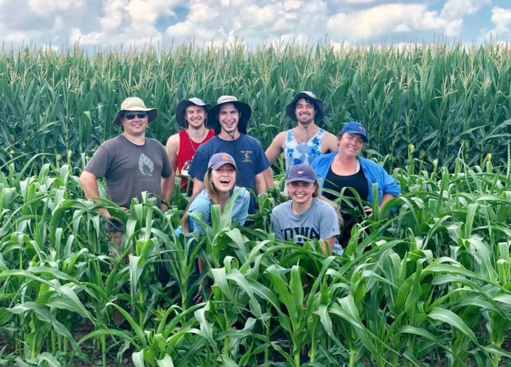
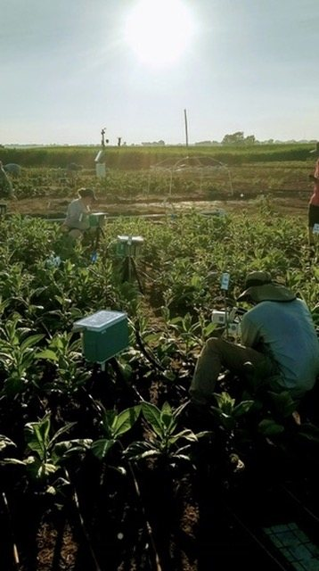
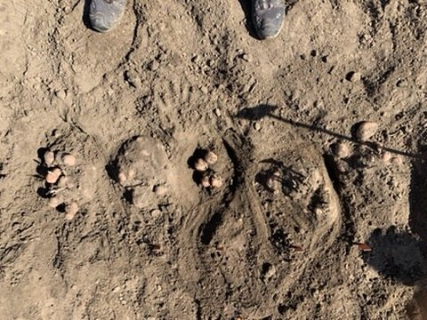
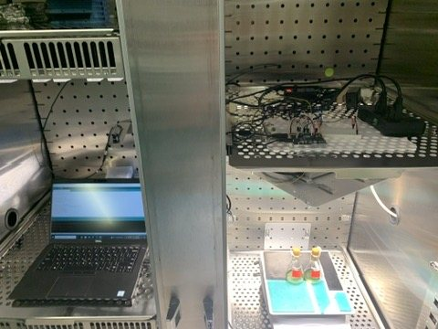
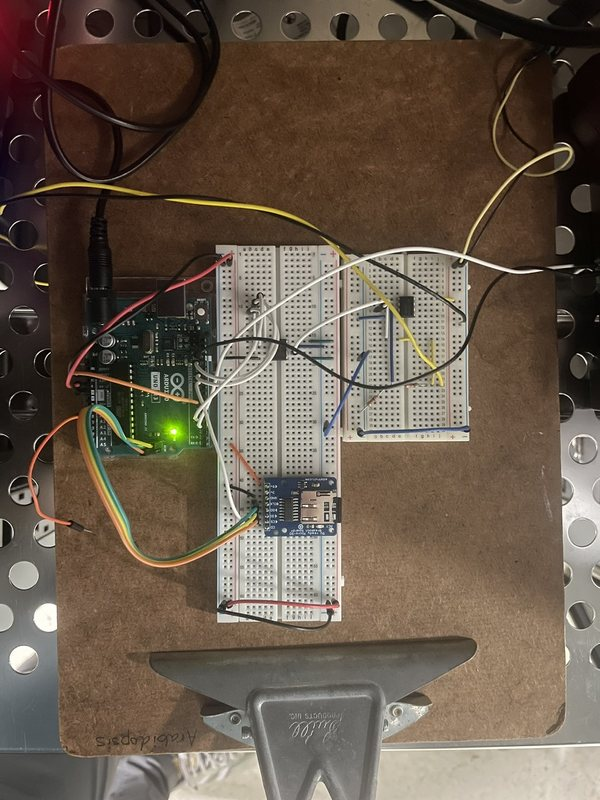

Photosynthesis under changing light
A regular flicker and a random one can deliver similar amounts of light. I study whether algae respond differently to the two patterns.
Photosynthesis, patterns, and the tools to explore them.
I’m a plant biologist interested in how living things respond to change and process information, and how mathematics can describe biological systems and networks. I study photosynthesis, build scientific instruments, and explore these ideas through code.

I earned my Ph.D. in Biochemistry at Louisiana State University in 2026, with a minor in Mathematics. My research in David Vinyard’s lab asked how algae adjust when the light around them keeps changing.
Before that, I worked with the RIPE project at the University of Illinois Urbana-Champaign on ways to improve photosynthesis in crops. I’m drawn to questions that bring biology, mathematics, and hands-on experiments together.




A regular flicker and a random one can deliver similar amounts of light. I study whether algae respond differently to the two patterns.
Several processes can appear in the same measurement. I develop ways to separate them and understand how the machinery of photosynthesis works.
Sometimes a question needs a new tool. I build programmable lights, optical hardware, and software for collecting and interpreting data.
Change a light pattern, build a nonrepeating tiling, or see what simple rules can create in the Game of Life. These small browser experiments are another way to explore the ideas that interest me.
Open the interactive collection